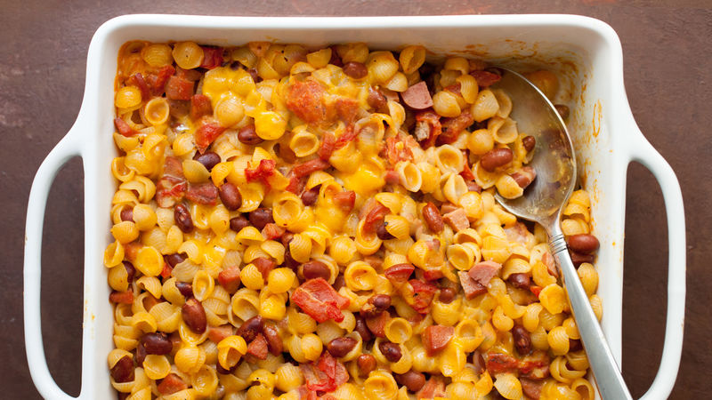

Chili Dog Mac and Cheese

Ingredients
- Frozen French Fries
- Frozen Chopped Broccoli
- Cubed Ham
- Mushroom soup
- Can milk
- Mayonaise
- Grated Parmesan cheese
Steps
- Preheat oven to 375 degrees F (190 degrees C).
-
Spray a 9x13 inch baking dish with cooking spray. Cover bottom of dish
with layer of French fries. Add a layer of broccoli, then sprinkle ham
evenly over broccoli. In a small bowl mix together soup, milk and
mayonnaise. Pour mixture evenly over ingredients in baking dish and
sprinkle with cheese.
- Bake uncovered in preheated oven for 40 minutes.